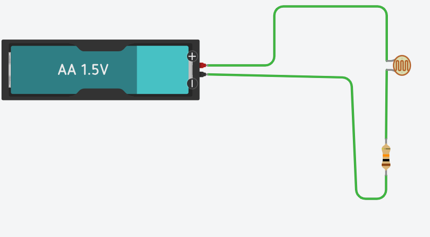

Google Sheets et Python Matplotlib — Capteurs passifs, Pont diviseur et Modélisation CTN 10 kΩ
numpy / matplotlib.Exécuter > Configurer l'interpréteur... > Python 3 local.
Une photorésistance (LDR pour Light Dependent Resistor) est un capteur passif dont la résistance interne diminue lorsque le flux lumineux incident augmente.
1. Sous Tinkercad Circuits, reliez une LDR directement aux bornes d'un multimètre configuré en mode Ohmmètre (Ω).
2. Lancez la simulation, cliquez sur la LDR et faites varier le curseur de 0 % (obscurité) à 100 % (plein soleil).
3. Complétez le tableau de mesures suivant :
| Luminosité (%) | 0 % | 10 % | 20 % | 30 % | 40 % | 50 % | 60 % | 70 % | 80 % | 90 % | 100 % |
|---|---|---|---|---|---|---|---|---|---|---|---|
| Résistance mesurée R (kΩ ou Ω) | ... | ... | ... | ... | ... | ... | ... | ... | ... | ... | ... |
Insertion > Graphique.plt.scatter() et plt.plot() pour tracer les points et relier le profil.# Squelette à compléter d'après la galerie : https://matplotlib.org/stable/gallery/index.html
import matplotlib.pyplot as plt
# 1. TODO: Remplir les listes avec vos mesures réelles
luminosite = [0, 10, 20, 30, 40, 50, 60, 70, 80, 90, 100]
resistance_kohm = [ ... ] # <-- À COMPLÉTER avec vos valeurs mesurées
.....Q1. Pourquoi la grandeur de commande (Luminosité) doit-elle impérativement figurer sur l'axe des abscisses (X) et la grandeur mesurée (Résistance) sur l'axe des ordonnées (Y) ?
Q2. La relation observée est-elle linéaire ou non linéaire ? Décrivez l'évolution de la résistance lorsque l'éclairement augmente.
On dispose d'un second modèle de LDR dont les caractéristiques de fabrication sont différentes :
| Luminosité (%) | 0 | 10 | 20 | 30 | 40 | 50 | 60 | 70 | 80 | 90 | 100 |
|---|---|---|---|---|---|---|---|---|---|---|---|
| Résistance LDR 2 (Ω) | 9 | 12 | 20 | 50 | 110 | 200 | 400 | 1000 | 2200 | 5000 | 12000 |
À l'aide de la galerie Matplotlib (Subplots Demo), créez un script Python affichant les deux capteurs côte à côte dans deux sous-graphiques séparés.
# Squelette à compléter : afficher 2 graphiques séparés (1 ligne, 2 colonnes)
import matplotlib.pyplot as plt
lum = [0, 10, 20, 30, 40, 50, 60, 70, 80, 90, 100]
r_ldr1 = [ ... ] # Vos mesures de la LDR 1
r_ldr2 = [9, 12, 20, 50, 110, 200, 400, 1000, 2200, 5000, 12000]
fig, (ax1, ax2) = plt.subplots(1, 2, figsize=(11, 5))
# TODO: Tracer sur ax1 la courbe de la LDR 1 (avec titre et axes)
# ax1.plot( ... )
# TODO: Tracer sur ax2 la courbe de la LDR 2 (avec titre et axes)
# ax2.plot( ... )
plt.suptitle("Comparaison de la dynamique de mesure de deux LDR")
plt.tight_layout()
plt.show()Q3. Pourquoi la superposition de ces deux capteurs sur un seul axe à échelle linéaire rend-elle la lecture inexploitable ?
Réalisez sous Tinkercad Circuits le montage en pont diviseur alimenté par une source continue E = 1,5 V avec une résistance fixe Rfixe = 1 kΩ et votre LDR.

| Luminosité (%) | 0 % | 20 % | 40 % | 60 % | 80 % | 100 % |
|---|---|---|---|---|---|---|
| Tension ULDR (V) | ... | ... | ... | ... | ... | ... |
| Tension UR (V) | ... | ... | ... | ... | ... | ... |
| Somme Utot = ULDR + UR (V) | ... | ... | ... | ... | ... | ... |
# Squelette à compléter : Tracé des 3 tensions avec un graphique à barres
import matplotlib.pyplot as plt
import numpy as np
lum = np.array([0, 20, 40, 60, 80, 100])
u_ldr = np.array([ ... ]) # Vos mesures de U_LDR
u_r = np.array([ ... ]) # Vos mesures de U_R
u_tot = u_ldr + u_r
.......
Q4. Que constatez-vous sur la valeur de la somme Utot ? Quelle loi fondamentale de l'électricité cela valide-t-il ?
Q5. Sous Google Sheets, tracez avec un graphique à barres
Réalisez sous Tinkercad Circuits le circuit suivant : source 5,0 V, résistance de protection R = 220 Ω et une DEL. Mesurez au voltmètre la tension de seuil directe VF aux bornes de la DEL pour chaque couleur.
| Couleur de la DEL | Rouge | Jaune | Verte | Bleue | Blanche |
|---|---|---|---|---|---|
| Longueur d'onde λ estimée (nm) | 630 - 660 nm | 585 - 595 nm | 520 - 550 nm | 460 - 480 nm | Spectre large |
| Tension directe mesurée VF (V) | ... | ... | ... | ... | ... |
| Courant calculé IF = (5 - VF)/220 (mA) | ... | ... | ... | ... | ... |
À l'aide de la galerie Matplotlib (Bar chart demo), écrivez le script traçant le diagramme en barres de la tension de seuil directe avec la couleur correspondante pour chaque barre.
# Squelette à compléter d'après la galerie : https://matplotlib.org/stable/gallery/index.html
import matplotlib.pyplot as plt
couleurs = ['Rouge', 'Jaune', 'Verte', 'Bleue', 'Blanche']
vf_mesure = [ ... ] # <-- Renseigner vos tensions VF mesurées
couleurs_barres = ['red', 'gold', 'green', 'blue', 'lightgray']
plt.figure(figsize=(8, 5))
# TODO: Créer le diagramme en barres avec plt.bar()
# bars = plt.bar(couleurs, vf_mesure, color=couleurs_barres, edgecolor='black', width=0.55)
# TODO: Configurer les titres et axes
plt.title("Tension de seuil directe VF selon la couleur de la DEL")
plt.xlabel("Couleur de la DEL")
plt.ylabel("Tension VF (V)")
plt.grid(axis='y', linestyle=':')
plt.show()Q6. Pourquoi est-il strictement incorrect d'utiliser un nuage de points relié par une ligne continue pour cette grandeur ?
Q7. En rappelant la formule de Planck-Einstein E = h · ν = h · (c / λ), expliquez pourquoi les DELs bleues et blanches nécessitent une tension VF plus élevée que les DELs rouges.
Dans un circuit série à 3 dipôles sous E = 9,0 V, la tension se répartit proportionnellement aux résistances : R1 = 1,0 kΩ, R2 = 1,5 kΩ, R3 = 2,5 kΩ (Potentiomètre réglé à 2,5 kΩ).
| Dipôle / Résistance | Résistance nominale (kΩ) | Tension mesurée (V) | Part relative calculée (%) |
|---|---|---|---|
| Dipôle 1 : R1 | 1,0 | ... | ... |
| Dipôle 2 : R2 | 1,5 | ... | ... |
| Dipôle 3 : R3 (Potar) | 2,5 | ... | ... |
| TOTAL (Source E) | 5,0 | ... | 100,0 % |
À l'aide de la galerie Matplotlib (Pie chart demo), créez un graphique circulaire (camembert) avec l'affichage automatique des pourcentages et le détachement de la tranche du potentiomètre.
# Squelette à compléter d'après la galerie : https://matplotlib.org/stable/gallery/index.html
import matplotlib.pyplot as plt
labels = ['R1 (1.0 kΩ)', 'R2 (1.5 kΩ)', 'R3 (2.5 kΩ)']
tensions = [ ... ] # Renseigner vos 3 tensions mesurées (ATTENTION : SANS le total !)
explode = (0, 0, 0.1) # Détacher la tranche du potentiomètre
plt.figure(figsize=(6, 6))
# TODO: Tracer le camembert avec plt.pie()
# plt.pie(tensions, labels=labels, autopct='%1.1f%%', explode=explode, startangle=90)
plt.title("Répartition de la tension totale (Loi des mailles)")
plt.show()Q8. Quel problème se produit-il sous Google Sheets ou sous Python si l'on sélectionne par mégarde la ligne "TOTAL" dans les données du camembert ?
Q9. Si l'on tourne le curseur de R3 pour amener sa résistance à 0 Ω (court-circuit), que deviennent les tensions U1 et U2 ?
On conçoit la chaîne d'acquisition de température d'un système embarqué (serre connectée ou imprimante 3D). Le capteur utilisé est une thermistance CTN MF52-103 (10 kΩ à 25 °C, B25/50 = 3950 K). Plutôt que d'utiliser une formule théorique complexe, vous allez extraire la relation mathématique réelle T = f(R) directement à partir des données constructeur (datasheet) à l'aide d'une courbe de tendance, puis l'intégrer dans le code du capteur.
Le constructeur fournit dans sa documentation technique (datasheet) la caractéristique normalisée Résistance / Température pour la thermistance CTN MF52-103 (10 kΩ, valeur B25/50 = 3950 K) de -30 °C à +125 °C :
| Température T (°C) | Résistance RCTN (kΩ) | Résistance RCTN (Ω) | Tension Umes au pont diviseur (V) |
|---|---|---|---|
| -30 °C | 200,20 | 200 204 | ... |
| -25 °C | 144,32 | 144 317 | ... |
| -20 °C | 105,38 | 105 385 | ... |
| -15 °C | 77,90 | 77 898 | ... |
| -10 °C | 58,25 | 58 246 | ... |
| -5 °C | 44,03 | 44 026 | ... |
| 0 °C | 33,62 | 33 621 | ... |
| 5 °C | 25,92 | 25 925 | ... |
| 10 °C | 20,17 | 20 175 | ... |
| 15 °C | 15,84 | 15 837 | ... |
| 20 °C | 12,54 | 12 535 | ... |
| 25 °C | 10,00 | 10 000 | ... |
| 30 °C | 8,04 | 8 037 | ... |
| 35 °C | 6,51 | 6 506 | ... |
| 40 °C | 5,30 | 5 301 | ... |
| 45 °C | 4,35 | 4 348 | ... |
| 50 °C | 3,59 | 3 588 | ... |
| 55 °C | 2,98 | 2 978 | ... |
| 60 °C | 2,49 | 2 486 | ... |
| 65 °C | 2,09 | 2 086 | ... |
| 70 °C | 1,76 | 1 760 | ... |
| 75 °C | 1,49 | 1 492 | ... |
| 80 °C | 1,27 | 1 270 | ... |
| 85 °C | 1,09 | 1 087 | ... |
| 90 °C | 0,934 | 933,6 | ... |
| 95 °C | 0,805 | 805,4 | ... |
| 100 °C | 0,698 | 697,5 | ... |
| 105 °C | 0,606 | 606,4 | ... |
| 110 °C | 0,529 | 529,1 | ... |
| 115 °C | 0,463 | 463,3 | ... |
| 120 °C | 0,407 | 407,1 | ... |
| 125 °C | 0,359 | 358,8 | ... |
Dans un système instrumenté réel, le microcontrôleur mesure la résistance de la thermistance et doit en déduire la température. Nous cherchons donc la relation : T = f(R) (avec la Résistance R en abscisse X, et la Température T en ordonnée Y).
Insertion > Graphique > Type : Nuage de points.Personnaliser > Série > Cochez [x] Courbe de tendance.temp et r_kohm d'après le datasheet MF52-103 :
temp = np.array([-30, -25, -20, -15, -10, -5, 0, 5, 10, 15, 20, 25, 30, 35, 40, 45, 50, 55, 60, 65, 70, 75, 80, 85, 90, 95, 100, 105, 110, 115, 120, 125])
r_kohm = np.array([200.20, 144.32, 105.38, 77.90, 58.25, 44.03, 33.62, 25.92, 20.17, 15.84, 12.54, 10.00, 8.04, 6.51, 5.30, 4.35, 3.59, 2.98, 2.49, 2.09, 1.76, 1.49, 1.27, 1.09, 0.934, 0.805, 0.698, 0.606, 0.529, 0.463, 0.407, 0.359])coeffs_poly = np.polyfit(r_kohm, temp, deg=2)modele_poly = np.poly1d(coeffs_poly) (forme T(R) = a·R² + b·R + c).y_poly = modele_poly(x_trace).
coeffs_log = np.polyfit(np.log(r_kohm), temp, deg=1)y_log = coeffs_log[0] * np.log(x_trace) + coeffs_log[1].
plt.scatter) et la courbe du modèle retenu (plt.plot).Le coefficient de détermination R² (valeur sans dimension comprise entre 0 et 1, souvent exprimée en pourcentage de 0 % à 100 %) quantifie la proportion de la variabilité des mesures expliquée par le modèle mathématique choisi :
💡 Calcul direct du R² en Python :
residus = temp - y_modele_points
r2 = 1 - (np.sum(residus**2) / np.sum((temp - np.mean(temp))**2))
print(f"Qualité du modèle : R² = {r2:.4f}")
Q10. Relevez l'équation mathématique fournie par la courbe de tendance sous Google Sheets (ou Python) pour la relation T = f(R), ainsi que la valeur du coefficient R² (comparez les régressions polynomiale et logarithmique).
Q11. Le coefficient R² est-il satisfaisant ? Quel modèle retenez-vous ? Quelle est l'erreur maximale constatée entre le modèle et les données du constructeur ?
Pour mesurer la résistance de la CTN avec un microcontrôleur Raspberry Pi Pico, on réalise un pont diviseur alimenté sous 3,3 V (tension de référence du convertisseur ADC du Pico) avec une résistance fixe Rfixe = 10 kΩ. On prélève le potentiel entre les 2 résistances et on applique la formule du pont diviseur pour trouver la résistance Rctn.
1. Complétez la 4e colonne (Tension Umes au pont diviseur) du tableau de mesures en calculant la tension théorique pour quelques températures clés (avec une alimentation VCC = 3,3 V et Rfixe = 10 kΩ).
2. Câblez le montage sous Tinkercad Circuits et vérifiez la tension obtenue pour 25 °C (RCTN = 10 kΩ, soit Umes = 1,65 V).
Q12. Pourquoi la tension Umes augmente-t-elle quand la température augmente, alors que la résistance de la CTN diminue ?
Le microcontrôleur utilisé est un Raspberry Pi Pico (RP2040). Son convertisseur analogique-numérique (CAN / ADC, broche GP26 / ADC0) mesure une tension analogique comprise entre 0 et 3,3 V. En MicroPython, la méthode standard read_u16() retourne une valeur numérique brute non signée N comprise entre 0 et 65 535 (pleine échelle 16 bits, soit N = (Umes / 3,3) × 65535). Le programme doit réaliser les étapes suivantes :
U_mes = N × (3.3 / 65535.0)R_ctn_kohm = R_fixe × ((3.3 / U_mes) - 1.0)// ============================================================================
// PSEUDO-CODE : ACQUISITION & CALCUL DE TEMPÉRATURE SUR RASPBERRY PI PICO
// ============================================================================
Constantes :
BROCHE_ADC ← GP26 // Entrée analogique ADC0 (broche 31 de la Pico)
VREF ← 3.3 // Tension de référence ADC (3,3 V)
RESOLUTION_ADC ← 65535 // Pleine échelle 16 bits MicroPython (read_u16 : 0 à 65535)
R_FIXE ← 10.0 // Résistance fixe du pont diviseur (en kΩ)
// Coefficients de la loi de tendance T = f(R) identifiée en 4.2 :
// Option A : Modèle Polynomial (degré 2) : T(R) = a·R² + b·R + c
COEFF_A ← ... // Valeur de 'a' relevée à la question Q10
COEFF_B ← ... // Valeur de 'b' relevée à la question Q10
COEFF_C ← ... // Valeur de 'c' relevée à la question Q10
// (Ou Option B si modèle Logarithmique retenu : T(R) = a·ln(R) + b)
Initialisation :
Configurer BROCHE_ADC en entrée analogique
Initialiser la liaison série / moniteur console
Boucle principale (Répéter indéfiniment) :
// 1. Acquisition de la valeur brute du CAN (0 à 65535 sur Raspberry Pi Pico)
N ← Lire_ADC_16bits(BROCHE_ADC)
// 2. Conversion de la valeur numérique brute en tension analogique (V)
U_mes ← N * (VREF / RESOLUTION_ADC)
// 3. Calcul de la résistance de la CTN en kΩ (loi du pont diviseur sous 3,3 V)
Si U_mes > 0.05 alors
R_ctn ← R_FIXE * ((VREF / U_mes) - 1.0)
// 4. Déduction de la température en °C par la courbe de tendance
// --- Si Modèle Polynomial (degré 2) ---
Temperature ← COEFF_A * (R_ctn ^ 2) + COEFF_B * R_ctn + COEFF_C
// --- Si Modèle Logarithmique (forme T = a·ln(R) + b) ---
// Temperature ← COEFF_A * ln(R_ctn) + COEFF_B
// 5. Affichage des grandeurs mesurées et calculées
Afficher "U_mes = " + U_mes + " V | R_ctn = " + R_ctn + " kΩ | T = " + Temperature + " °C"
Sinon
Afficher "Alerte : Tension anormale / sonde déconnectée"
Fin Si
Attendre 1 seconde
Fin Boucle| Nature des données | Graphique Recommandé | Représentation sous Google Sheets | Représentation sous Python (Matplotlib) | Exemples en SI |
|---|---|---|---|---|
| 2 grandeurs physiques continues | Nuage de points (XY) | Type : Nuage de points+ Courbe de tendance (R²) |
plt.scatter()& plt.plot() |
• R = f(Luminosité) • T = f(R) (thermistance) • uc(t) (charge RC) |
| Catégories discrètes / qualitatives | Diagramme en colonnes/barres | Type : Graphique en colonnes+ Étiquettes de données |
plt.bar()+ plt.bar_label() |
• Tension VF par couleur de DEL • Consommation par mode de veille |
| Bilan de répartition (Total = 100 %) | Graphique en secteurs (Camembert) | Type : Graphique en secteurs(Exclure impérativement le TOTAL !) |
plt.pie(..., autopct='%1.1f%%')+ explode |
• Loi des mailles (U1 + U2 + U3 = E) • Bilan des pertes d'un moteur |
| Compétences évaluées | Indicateurs d'évaluation | Barème |
|---|---|---|
| 1. Câblage et simulation Tinkercad | Circuits corrects, branchements respectés, relevés cohérents et sans court-circuit. | / 4 |
| 2. Maîtrise de Google Sheets | Tableaux correctement renseignés, formules sans erreur, types de graphiques appropriés. | / 4 |
| 3. Maîtrise de Matplotlib (Python) | Recherche efficace dans la galerie Matplotlib, scripts complets, axes et titres soignés. | / 4 |
| 4. Modélisation mathématique (R²) | Régression polynomiale/linéaire exploitée, analyse de la qualité de modélisation. | / 4 |
| 5. Challenge Capteur CTN 10 kΩ | Courbe de tendance extraite du datasheet, équation injectée et code de conversion fonctionnel. | / 4 |
| NOTE FINALE DU TP : | / 20 | |